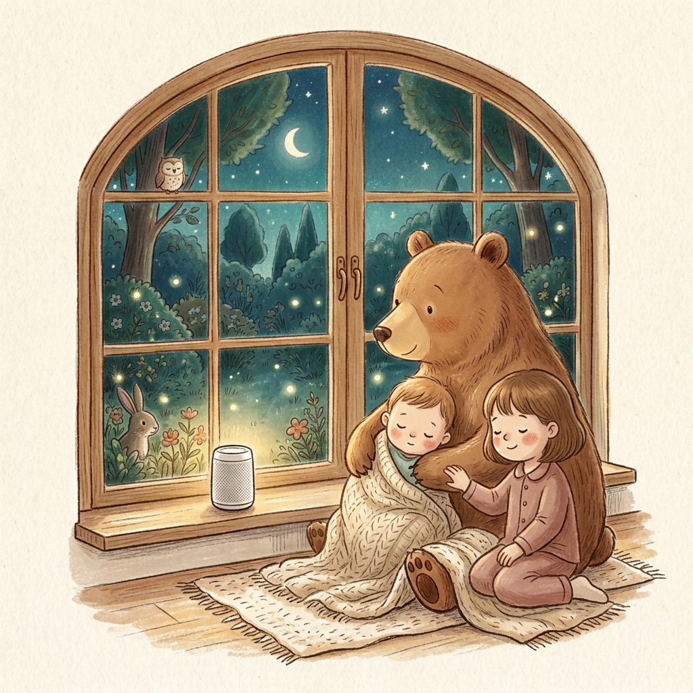
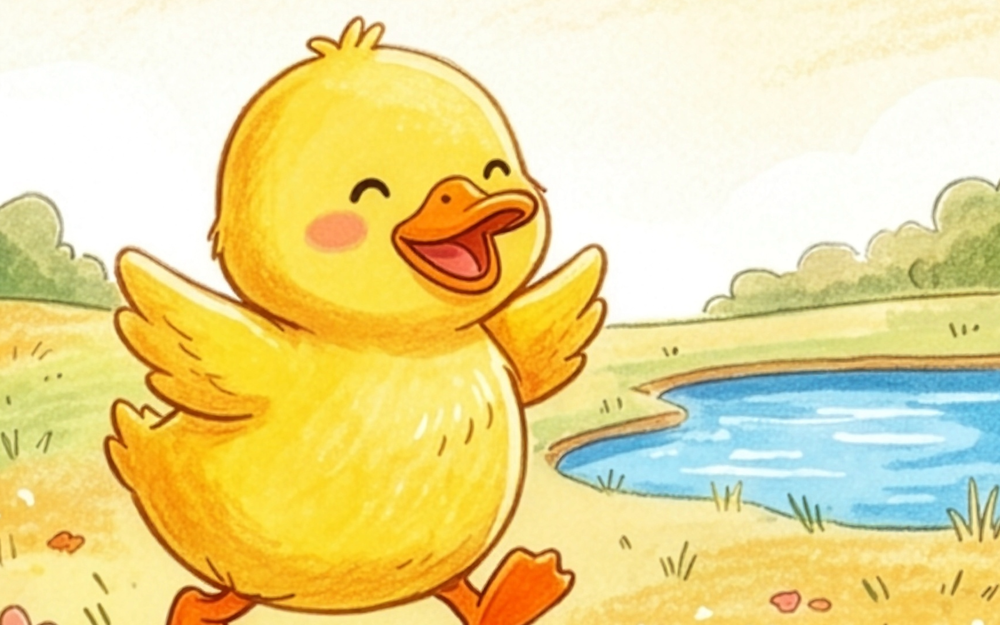
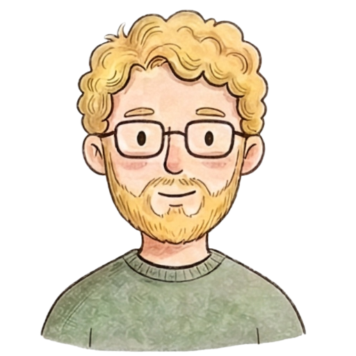
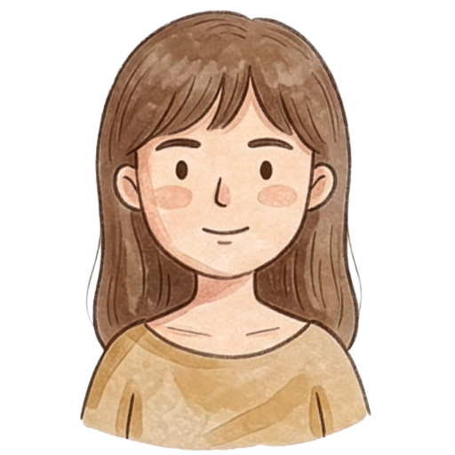

Enverly
Week 1 · August
きょうのとびら

Morning talk
朝のひとときに

イブニングトーク

えほんタイム
いつでも
Sunny Day!
--
--
---
タイトル
朝のひととき、ラジオ感覚で流してみてね。
ふと出てきたフレーズが、今日の親子の話のきっかけになりますように。
"What animal did you see today?"
今日のお話：今日見た動物は何色だった？


0:00
▼
"What animal did you see today?"今日どんな動物見た？
"It was brown!"茶色だったよ！
--
--
---
タイトル
おかえりなさい。今日の「どうだった？」を、JoelとMaiのおしゃべりと一緒にどうぞ。
寝る前のひとときに、ぴったりの長さです。
"How was your day?"
今日どうだった？
0:00
▼
Monthly Book
今月の教材絵本
8月のテーマ · Water & Sun
Sunny Day!
あひるの子と一緒に、暑い夏の日を過ごす絵本です。"It's hot!" "Let's swim!" など、夏らしいフレーズが繰り返し出てくるので、読み聞かせながら一緒に声に出してみて。
Weekly Pick
今週のおすすめ絵本
寝る前や日本語の絵本と一緒に取り入れてみてね。毎日歌うと英語フレーズが自然に残っていくよ。

Row, Row, Row Your Boat
伝承童謡（Nursery Rhyme） · 1〜5歳 · 約1分
歌詞を見ながら歌う
アプリ内表示 · たったの4行
無料・すぐ見れる
▼
Row, row, row your boat,
ロウ、ロウ、ロウ・ユア・ボウト
漕げ 漕げ ボートを漕げ
Gently down the stream.
ジェントリー・ダウン・ザ・ストリーム
小川をゆっくり下ってく
Merrily, merrily, merrily, merrily,
メリリー、メリリー、メリリー、メリリー
たのしいな たのしいな たのしいな たのしいな
Life is but a dream.
ライフ・イズ・バット・ア・ドリーム
人生はまるで夢のよう
YouTubeで聴く
Super Simple Songs · 定番チャンネル
↗
手元に置く（Amazon）
Mother Gooseまとめ絵本 · ¥3,300〜
↗
▼
ボートを漕ぐ動作に合わせて歌える、体を動かしながら覚えられる定番の童謡。row・boat・streamなどシンプルな単語が繰り返され、今月のテーマ「Water & Sun」にぴったりです。
Monthly Playlist 今月のテーマに合わせた曲
タップでYouTubeが開きます。かけ流しはスピーカーから流すのがおすすめ。